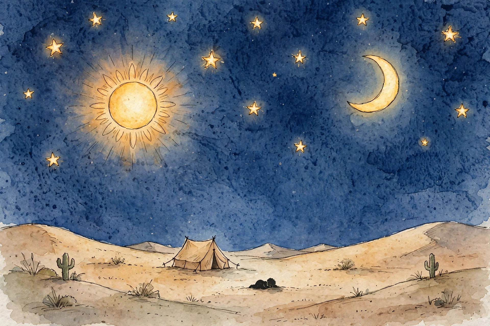
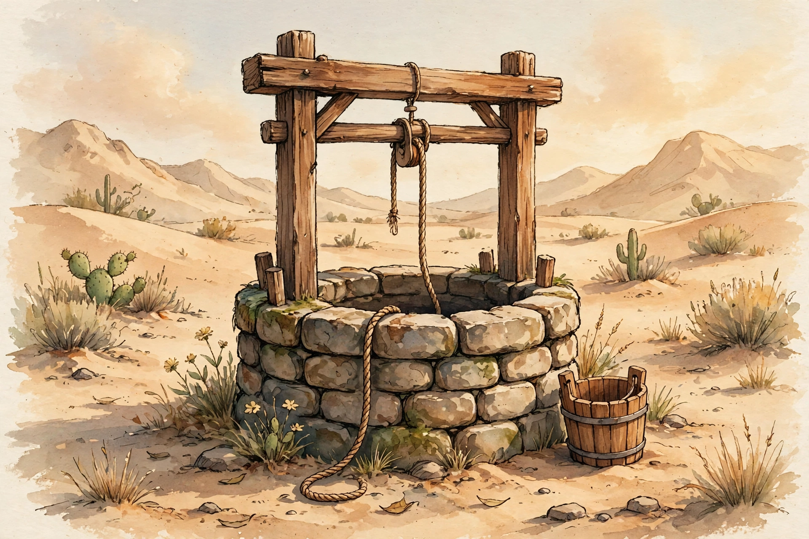
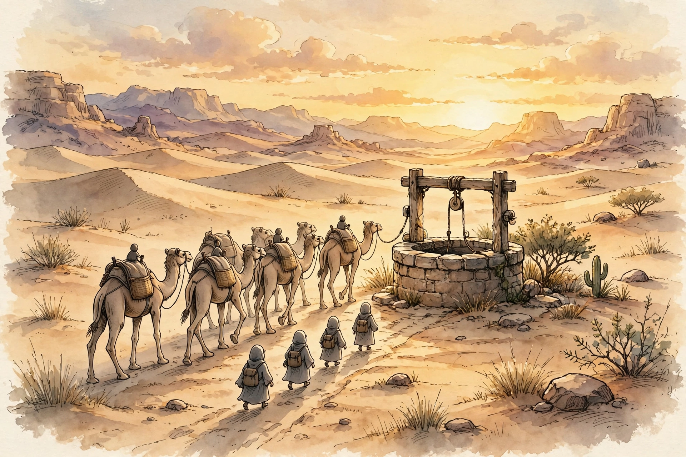
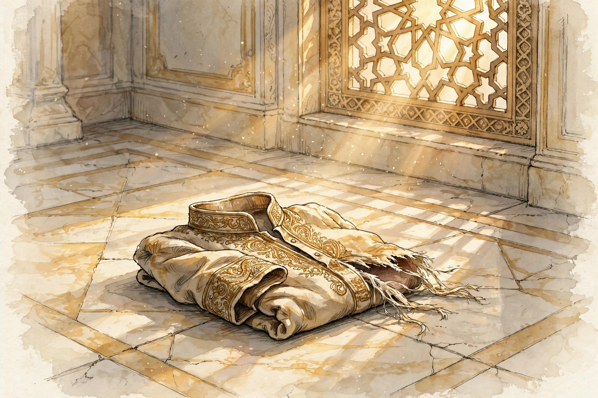
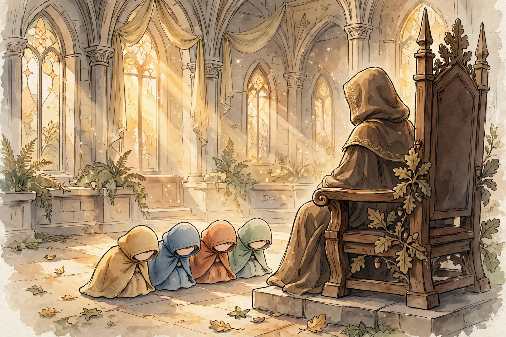

Scene 1 of 16
The Best of Stories
Allah calls the story of Yusuf the best of stories — ahsan al-qasas. He relates it in the Quran, in what He revealed, though before it the Prophet — peace be upon him — was among the unaware. Of all the stories ever told, this is the one Allah Himself named the best.
Quran 12:3
نَحْنُ نَقُصُّ عَلَيْكَ أَحْسَنَ ٱلْقَصَصِ بِمَآ أَوْحَيْنَآ إِلَيْكَ هَـٰذَا ٱلْقُرْءَانَ وَإِن كُنتَ مِن قَبْلِهِۦ لَمِنَ ٱلْغَـٰفِلِينَ
We relate to you, [O Muḥammad], the best of stories in what We have revealed to you of this Qur'ān although you were, before it, among the unaware.
Surah 12 · Verse 3 — Saheeh International
Scene 2 of 16
The Dream
When Yusuf was a boy, he went to his father with a dream he could not forget: “O my father, I have seen eleven stars, and the sun and the moon — I saw them prostrating to me.” A strange dream for a child. But it was a true one, and it would take many years — and many tears — to come true.
Quran 12:4
إِذْ قَالَ يُوسُفُ لِأَبِيهِ يَـٰٓأَبَتِ إِنِّى رَأَيْتُ أَحَدَ عَشَرَ كَوْكَبًا وَٱلشَّمْسَ وَٱلْقَمَرَ رَأَيْتُهُمْ لِى سَـٰجِدِينَ
[Of these stories mention] when Joseph said to his father, "O my father, indeed I have seen [in a dream] eleven stars and the sun and the moon; I saw them prostrating to me."
Surah 12 · Verse 4 — Saheeh International
Hadith
“The honorable, the son of the honorable, the son of the honorable, (was) Joseph, the son of Jacob! the son of Isaac, the son of Abraham.”
— Narrated Ibn 'Umar

Scene 3 of 16
The Father’s Hope
His father Yaqub understood that this dream was a sign of great things to come. He told his son: your Lord will choose you. He will teach you the interpretation of dreams and events, and He will complete His favour upon you and upon the family of Jacob — just as He completed it upon your forefathers, Abraham and Isaac, before you.
Quran 12:6
وَكَذَٰلِكَ يَجْتَبِيكَ رَبُّكَ وَيُعَلِّمُكَ مِن تَأْوِيلِ ٱلْأَحَادِيثِ وَيُتِمُّ نِعْمَتَهُۥ عَلَيْكَ وَعَلَىٰٓ ءَالِ يَعْقُوبَ كَمَآ أَتَمَّهَا عَلَىٰٓ أَبَوَيْكَ مِن قَبْلُ إِبْرَٰهِيمَ وَإِسْحَـٰقَ ۚ إِنَّ رَبَّكَ عَلِيمٌ حَكِيمٌ
And thus will your Lord choose you and teach you the interpretation of narratives [i.e., events or dreams] and complete His favor upon you and upon the family of Jacob, as He completed it upon your fathers before, Abraham and Isaac. Indeed, your Lord is Knowing and Wise.
Surah 12 · Verse 6 — Saheeh International
Scene 4 of 16
The Plot
But jealousy had grown among Yusuf’s brothers. One of them spoke up with a plan: do not kill Yusuf — throw him into the bottom of a deep well instead, and some travellers passing by would pick him up. The well, not death, was their decision.
Quran 12:10
قَالَ قَآئِلٌ مِّنْهُمْ لَا تَقْتُلُوا۟ يُوسُفَ وَأَلْقُوهُ فِى غَيَـٰبَتِ ٱلْجُبِّ يَلْتَقِطْهُ بَعْضُ ٱلسَّيَّارَةِ إِن كُنتُمْ فَـٰعِلِينَ
Said a speaker among them, "Do not kill Joseph but throw him into the bottom of the well; some travelers will pick him up - if you would do [something]."
Surah 12 · Verse 10 — Saheeh International
Scene 5 of 16
The Well
They took Yusuf out with them and agreed together to lower him into the dark bottom of the well. But in that darkness, Allah inspired to the frightened boy: “You will surely tell them about what they did to you one day — while they do not even recognise you.” Even at the bottom of a well, Allah was with him.
Quran 12:15
فَلَمَّا ذَهَبُوا۟ بِهِۦ وَأَجْمَعُوٓا۟ أَن يَجْعَلُوهُ فِى غَيَـٰبَتِ ٱلْجُبِّ ۚ وَأَوْحَيْنَآ إِلَيْهِ لَتُنَبِّئَنَّهُم بِأَمْرِهِمْ هَـٰذَا وَهُمْ لَا يَشْعُرُونَ
So when they took him [out] and agreed to put him into the bottom of the well... But We inspired to him, "You will surely inform them [someday] about this affair of theirs while they do not perceive [your identity]."
Surah 12 · Verse 15 — Saheeh International

Scene 6 of 16
The Caravan
Then a caravan of travellers arrived at the well. They sent their water-drawer, and he let down his bucket — and pulled up a boy. “Good news!” he cried. “Here is a boy!” They hid him and carried him off as merchandise to be sold. But Allah knew exactly what they were doing.
Quran 12:19
وَجَآءَتْ سَيَّارَةٌ فَأَرْسَلُوا۟ وَارِدَهُمْ فَأَدْلَىٰ دَلْوَهُۥ ۖ قَالَ يَـٰبُشْرَىٰ هَـٰذَا غُلَـٰمٌ ۚ وَأَسَرُّوهُ بِضَـٰعَةً ۚ وَٱللَّهُ عَلِيمٌۢ بِمَا يَعْمَلُونَ
And there came a company of travelers; then they sent their water drawer, and he let down his bucket. He said, "Good news! Here is a boy." And they concealed him, [taking him] as merchandise; and Allāh was knowing of what they did.
Surah 12 · Verse 19 — Saheeh International

Scene 7 of 16
The Trial in Egypt
Yusuf was taken to Egypt, into the house of a great man. There, the woman of the house tried to seduce him. She locked the doors and said, “Come.” But Yusuf sought the refuge of Allah: “My master has made good my residence — and wrongdoers will never succeed.” Alone, far from home, with no one watching — he chose Allah.
Quran 12:23
وَرَٰوَدَتْهُ ٱلَّتِى هُوَ فِى بَيْتِهَا عَن نَّفْسِهِۦ وَغَلَّقَتِ ٱلْأَبْوَٰبَ وَقَالَتْ هَيْتَ لَكَ ۚ قَالَ مَعَاذَ ٱللَّهِ ۖ إِنَّهُۥ رَبِّىٓ أَحْسَنَ مَثْوَاىَ ۖ إِنَّهُۥ لَا يُفْلِحُ ٱلظَّـٰلِمُونَ
And she, in whose house he was, sought to seduce him. She closed the doors and said, "Come, you." He said, "[I seek] the refuge of Allāh. Indeed, he is my master, who has made good my residence. Indeed, wrongdoers will not succeed."
Surah 12 · Verse 23 — Saheeh International
Hadith
“I saw Yusuf (peace of Allah be upon him) who had been given half of (world) beauty. He welcomed me and prayed for my well-being.”
— Narrated Anas b. Malik, describing the Night Journey
Scene 8 of 16
The Torn Shirt
When he was accused, Yusuf spoke the truth: “It was she who sought to seduce me.” A witness from her own family proposed a test: look at the shirt. If it is torn from the front, she is truthful and he is lying. But when her husband saw the shirt torn from the back — proof that Yusuf had been running away — he said: “This is from your scheming. Indeed, your scheming is great.”
Quran 12:26
قَالَ هِىَ رَٰوَدَتْنِى عَن نَّفْسِى ۚ وَشَهِدَ شَاهِدٌ مِّنْ أَهْلِهَآ إِن كَانَ قَمِيصُهُۥ قُدَّ مِن قُبُلٍ فَصَدَقَتْ وَهُوَ مِنَ ٱلْكَـٰذِبِينَ
[Joseph] said, "It was she who sought to seduce me." And a witness from her family testified, "If his shirt is torn from the front, then she has told the truth, and he is of the liars."
Surah 12 · Verse 26 — Saheeh International
Quran 12:28
فَلَمَّا رَءَا قَمِيصَهُۥ قُدَّ مِن دُبُرٍ قَالَ إِنَّهُۥ مِن كَيْدِكُنَّ ۖ إِنَّ كَيْدَكُنَّ عَظِيمٌ
So when he [i.e., her husband] saw his shirt torn from the back, he said, "Indeed, it is of your [i.e., women's] plan. Indeed, your plan is great [i.e., vehement].
Surah 12 · Verse 28 — Saheeh International

Scene 9 of 16
Prison Before Sin
Even with his innocence clear, the pressure did not stop. So Yusuf turned to Allah with a prayer that shows his heart: “My Lord, prison is more beloved to me than what they are calling me to. If You do not turn their scheming away from me, I might lean toward them and become of the ignorant.” He chose a prison cell over disobeying Allah.
Quran 12:33
قَالَ رَبِّ ٱلسِّجْنُ أَحَبُّ إِلَىَّ مِمَّا يَدْعُونَنِىٓ إِلَيْهِ ۖ وَإِلَّا تَصْرِفْ عَنِّى كَيْدَهُنَّ أَصْبُ إِلَيْهِنَّ وَأَكُن مِّنَ ٱلْجَـٰهِلِينَ
He said, "My Lord, prison is more to my liking than that to which they invite me. And if You do not avert from me their plan, I might incline toward them and [thus] be of the ignorant."
Surah 12 · Verse 33 — Saheeh International
Scene 10 of 16
The Interpretation
Yusuf’s gift was the interpretation of dreams — the very gift his father had foretold for him. His counsel for the seven years ahead was practical and precise: “Plant for seven consecutive years. Leave what you harvest in its spikes — store it — except for a little that you eat.”
Quran 12:47
قَالَ تَزْرَعُونَ سَبْعَ سِنِينَ دَأَبًا فَمَا حَصَدتُّمْ فَذَرُوهُ فِى سُنۢبُلِهِۦٓ إِلَّا قَلِيلًا مِّمَّا تَأْكُلُونَ
[Joseph] said, "You will plant for seven years consecutively; and what you harvest leave in its spikes, except a little from which you will eat."
Surah 12 · Verse 47 — Saheeh International
Scene 11 of 16
The Truth Comes Out
At last the king himself questioned the women: “What happened when you tried to seduce Yusuf?” They answered: “Perfect is Allah — we know no evil of him.” And the wife of al-‘Azeez herself confessed before them all: “Now the truth has come out. It was I who sought to seduce him, and he is surely of the truthful.”
Quran 12:51
قَالَ مَا خَطْبُكُنَّ إِذْ رَٰوَدتُّنَّ يُوسُفَ عَن نَّفْسِهِۦ ۚ قُلْنَ حَـٰشَ لِلَّهِ مَا عَلِمْنَا عَلَيْهِ مِن سُوٓءٍ ۚ قَالَتِ ٱمْرَأَتُ ٱلْعَزِيزِ ٱلْـَٔـٰنَ حَصْحَصَ ٱلْحَقُّ أَنَا۠ رَٰوَدتُّهُۥ عَن نَّفْسِهِۦ وَإِنَّهُۥ لَمِنَ ٱلصَّـٰدِقِينَ
Said [the king to the women], "What was your condition when you sought to seduce Joseph?" They said, "Perfect is Allāh! We know about him no evil." The wife of al-ʿAzeez said, "Now the truth has become evident. It was I who sought to seduce him, and indeed, he is of the truthful."
Surah 12 · Verse 51 — Saheeh International
Scene 12 of 16
The Appointment
Cleared of every accusation, Yusuf was asked what position he wanted. He did not ask for wealth or revenge. He said: “Appoint me over the storehouses of the land. I will be a knowing guardian.” He asked for responsibility — so he could protect people from hunger.
Quran 12:55
قَالَ ٱجْعَلْنِى عَلَىٰ خَزَآئِنِ ٱلْأَرْضِ ۖ إِنِّى حَفِيظٌ عَلِيمٌ
[Joseph] said, "Appoint me over the storehouses of the land. Indeed, I will be a knowing guardian."
Surah 12 · Verse 55 — Saheeh International
Scene 13 of 16
Never Despair
Far away, his old father Yaqub had never stopped believing his son was alive. He sent his sons out with words every believer should hold onto in the darkest years: “Go and search for Yusuf and his brother, and never despair of relief from Allah. No one despairs of relief from Allah except the disbelieving people.”
Quran 12:87
يَـٰبَنِىَّ ٱذْهَبُوا۟ فَتَحَسَّسُوا۟ مِن يُوسُفَ وَأَخِيهِ وَلَا تَا۟يْـَٔسُوا۟ مِن رَّوْحِ ٱللَّهِ ۖ إِنَّهُۥ لَا يَا۟يْـَٔسُ مِن رَّوْحِ ٱللَّهِ إِلَّا ٱلْقَوْمُ ٱلْكَـٰفِرُونَ
O my sons, go and find out about Joseph and his brother and despair not of relief from Allāh. Indeed, no one despairs of relief from Allāh except the disbelieving people."
Surah 12 · Verse 87 — Saheeh International
Scene 14 of 16
Forgiveness
When the brothers stood before Yusuf at last — exposed, ashamed, at his mercy — he did not take revenge. He said: “No blame will be upon you today. May Allah forgive you — and He is the most merciful of the merciful.” At the height of his power, he chose forgiveness.
Quran 12:92
قَالَ لَا تَثْرِيبَ عَلَيْكُمُ ٱلْيَوْمَ ۖ يَغْفِرُ ٱللَّهُ لَكُمْ ۖ وَهُوَ أَرْحَمُ ٱلرَّٰحِمِينَ
He said, "No blame will there be upon you today. May Allāh forgive you; and He is the most merciful of the merciful."
Surah 12 · Verse 92 — Saheeh International
Scene 15 of 16
The Reunion
Then came the moment the dream had promised, all those years before. Yusuf raised his parents upon the throne, and they bowed to him — and Yusuf said: “O my father, this is the meaning of my dream from long ago. My Lord has made it come true. He was good to me when He brought me out of prison, and brought you from the desert, after Satan had caused trouble between me and my brothers. My Lord is subtle in what He wills — He is the Knowing, the Wise.”
Quran 12:100
وَرَفَعَ أَبَوَيْهِ عَلَى ٱلْعَرْشِ وَخَرُّوا۟ لَهُۥ سُجَّدًا ۖ وَقَالَ يَـٰٓأَبَتِ هَـٰذَا تَأْوِيلُ رُءْيَـٰىَ مِن قَبْلُ قَدْ جَعَلَهَا رَبِّى حَقًّا ۖ وَقَدْ أَحْسَنَ بِىٓ إِذْ أَخْرَجَنِى مِنَ ٱلسِّجْنِ وَجَآءَ بِكُم مِّنَ ٱلْبَدْوِ مِنۢ بَعْدِ أَن نَّزَغَ ٱلشَّيْطَـٰنُ بَيْنِى وَبَيْنَ إِخْوَتِىٓ ۚ إِنَّ رَبِّى لَطِيفٌ لِّمَا يَشَآءُ ۚ إِنَّهُۥ هُوَ ٱلْعَلِيمُ ٱلْحَكِيمُ
And he raised his parents upon the throne, and they bowed to him in prostration. And he said, "O my father, this is the explanation of my vision of before. My Lord has made it reality. And He was certainly good to me when He took me out of prison and brought you [here] from bedouin life after Satan had induced [estrangement] between me and my brothers. Indeed, my Lord is Subtle in what He wills. Indeed, it is He who is the Knowing, the Wise.
Surah 12 · Verse 100 — Saheeh International

Scene 16 of 16
The Closing Du’a
At the very height of his power — with wealth, position, and family restored — Yusuf did not ask for more of this world. He turned to Allah: “My Lord, You have given me sovereignty and taught me the interpretation of dreams. Creator of the heavens and the earth, You are my Protector in this world and the next. Cause me to die as a Muslim, and join me with the righteous.”
Quran 12:101
رَبِّ قَدْ ءَاتَيْتَنِى مِنَ ٱلْمُلْكِ وَعَلَّمْتَنِى مِن تَأْوِيلِ ٱلْأَحَادِيثِ ۚ فَاطِرَ ٱلسَّمَـٰوَٰتِ وَٱلْأَرْضِ أَنتَ وَلِىِّۦ فِى ٱلدُّنْيَا وَٱلْـَٔاخِرَةِ ۖ تَوَفَّنِى مُسْلِمًا وَأَلْحِقْنِى بِٱلصَّـٰلِحِينَ
My Lord, You have given me [something] of sovereignty and taught me of the interpretation of dreams. Creator of the heavens and earth, You are my protector in this world and the Hereafter. Cause me to die a Muslim and join me with the righteous."
Surah 12 · Verse 101 — Saheeh International
A note on sources
Everything in this chapter comes from Surah Yusuf itself, which tells the story from beginning to end. We have not named the king, the brothers, or others beyond what the verses say, and we have added no details the Quran does not give. Where the Quran is silent, this chapter is silent too.
Lessons
- Dreams can carry truth. The boy’s dream came true years later, exactly as Allah willed. (Quran 12:4, 12:100)
- Choose hardship over sin. Yusuf preferred prison to disobeying Allah. (Quran 12:33)
- Never despair of Allah’s relief. Yaqub’s words in the darkest years. (Quran 12:87)
- Forgive when you have the power. Yusuf forgave the brothers who had wronged him. (Quran 12:92)
Check what you remember
Three questions, answered straight from the verses above.
-
1. In Yusuf’s dream, how many stars prostrated to him?
Quran 12:4
-
2. What did Yusuf say was more beloved to him than sin?
Quran 12:33
-
3. What did Yusuf ask to be appointed over?
Quran 12:55